Painted Monasteries from
Bukovina, Romania
Bukovina is a Romanian region situated
to the North of Moldavia. The
name of Bukovina dates back to its annexation by the Habsburgs in 1774 (annexation
which
lasted until after WW I), and it means a land covered by beech forests. This
part of Romania is especially beautiful, with a clean unspoiled nature, and a
unique landscape: thick forests and imposing crests,
branching off from the Karpathian mountains, which allow a wonderful panorama of valleys,
with houses scattered here and there, with large gardens and farm yards inviting
one to lie down by the haystacks and look up at the blue sky with its marvelous
hues.
This is the land where the painted monasteries which now hold a place of pride
among world cultural sites were built. They all lie in the region close to the
town of Suceava, in the northern part of the country.

|
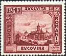 |
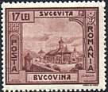 |
The monasteries were built during the 15th - 16th centuries, at a time marked by the personalities of the Moldavian prince Stephen the Great (1457-1504), and of his son, Petru Rares (1530-1538; 1541-1546). Stephen the Great was an illustrious army commander, a defender of Christendom and a prolific promoter of culture. They say that Stephen the Great ruled for 47 years, that he fought 47 defense battles, mainly against the Turks, but also against the Tartars, the Cossacks, the Poles and the Magyars, and that he erected about the same number (44) of churches and monasteries. During his time, monasteries were not decorated with exterior polychromes frescoes, but with colorful enameled ceramics placed around the steeples and below the cornices.
|
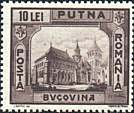 |
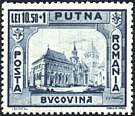 |
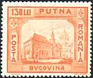 |
It was only by the end of the 15th century, and then all along the 16th century, mainly during Petru Rares' time, that exterior mural paintings flourished in Moldavia. Nevertheless, Stephen the Great churches, though small in size, were solid and had a special architectural design (octagonal cupolas raised graciously on tall, stellar foundations) out of which sprung up, during the next centuries, the so-called Moldavian art style. This term entered the history of art to define a harmonious blend of Byzantine architecture with Romanian folk artistic traditions and certain Gothic influences which had reached Moldavia through Serbia, Russia and Poland. Therefore, the main original element of the Moldavian architecture in the 15th century churches relates to the vaulting system of the nave and of the narthex by means of pendentives supporting the monumental, but supple and elegant belfry. Though the monuments are made of ordinary raw materials, i. e. stone, brick, wood, they produce a special effect due to the face brickwork of their façades.
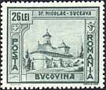 |
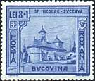 |
But the most valuable asset of the monasteries in Bukovina, the one for
which they are world famous, is their outer wall painting in fresco technique,
perceived by Michelangelo, for instance, as 'the most difficult and most daring
way of painting'. The painters of the monasteries in Bukovina, most of whom are
anonymous, would draw and paint directly on wet lime, upon which they would
apply color layers that would penetrate deep into the plaster. What is
coined as almost a miracle is the fact that a layer of color of only 0,25 cm
thick could possibly resist to all climatic, seasonal and human interference for over 400 years.
The frescoes at Voronet, Humor, Moldovita, Arbore or Sucevita are all
governed by a unifying spirit which is expressed on the one
hand by the recurrence of artistic styles, means, motifs and scenes, and, on the
other hand by the absolute harmony established between man's genius at work and
the beautiful natural background against which the monasteries were set.
|
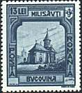 |
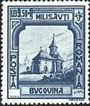 |
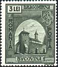 |
When you find yourself inside any of the painted monasteries in Bukovina, all you have to do is look around and discover for yourself the patterns adopted by its painters. Thus the figure of the Holy Virgin, a symbol of the Christian mystery, gleams in the semicupola of the apse. Scenes of the Holy Mass along with sacred themes relating to the most important feasts of the year are painted on the walls all around. The Christ Pantocrator - ruler of all things -, placed in the central dome, looks down from 'the rim of heaven' to the earthly world with a stern and yet compassionate eye. Around Him, ranked in hierarchic order, are groups of angels, processions of prophets and apostles, saints and laymen. The monastery's founders and builders would always be painted on the walls of the narthex; they would kneel down before the Savior sat on a throne and offer to Him, in all humbleness and veneration, a miniature model of the church.
|
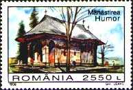 |
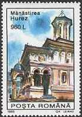 |
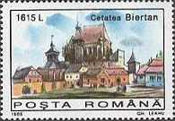 |
Once outside, the visitor is dazzled by the perfect chromatic harmony between
the light blue background of the monasteries' painted walls and the blue summer
sky along the green shades of lawns, pastures and forests around. These small and
colorful churches which soar up skywards like flowers from the ground are a
unique artistic form to express man's prodigious and solemn imagination
and his irrepressible joy of life.
The value of the frescoes is not only a matter of painting technique. The idea
of decorating the outer walls of a church with scenes taken from the Bible is
original in itself, since it is a remarkable sample of how people could be
educated by means of images during the Middle Ages. The images are a mixture of
biblical events with folk tales, legends, and great historical events, like the
fall of Constantinople (1453), for instance. The painting cover the whole
wall surface of a church, which is another element that renders the five painted
monasteries of Bukovina unique. In acknowledgement of their singleness, the monasteries in Bukovina
were declared UNESCO protected cultural sites.
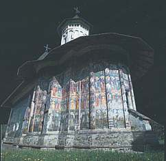 |
 |
"
No other place in the world holds, as Bukovina does, such a highly developed organic painting system; nowhere else in the whole world are there to be found frescoes on both the interior and the exterior sides of the walls of churches which are drawn together within an area so small as if it were an open air museum. Moreover, no other place exhibits frescoes preserved so well as the monasteries which lie at the foot of Bukovinan hillocks. The aesthetic value of those paintings goes well beyond their iconographic, cultural and historic significance, as they can undeniably be ranged among the greatest Byzantine or Renaissance works of art." Grigore Nandris: "Humanism in Postbyzantine Mural Painting", Meridiane Publishing House, Bucharest, 1985. (Source: after a Romanian travel site).Historical note. The first 11 stamps shown above were issued on 1st of December 1941. Actually two sets were issued, displaying monasteries from Bessarabia and Bukovina. They celebrate the recovery of Bessarabia and Northern Bukovina from the USSR, lost in 1940 as a result of the Soviet - German pact (known under the name of the Molotov-Ribentrop pact, after the names of the first ministers of their respective countries). Both territories came to Romania in 1918, after a referendum. They will be lost again in 1945, in the favor of the USSR (as decided at the Yalta Conference). Today the Northern Bukovina is part of Ukraine.
Background: Voronet Monastery, outer wall painting.
Links to other Monastery Frescoes pages: Voronet, Moldovita, Sucevita
| Published:
07/01/01. Revised: 08/06/01.
Copyright © 1999 - 2001 by Victor Manta, Switzerland. All rights reserved in all countries. |